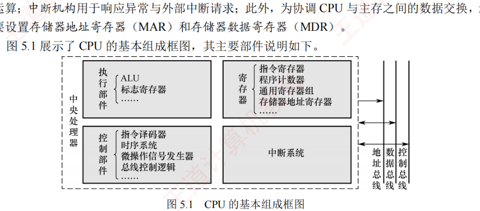

5.1 CPU的功能和基本结构
CPU 是计算机的"大脑"：对外表现为不断取指、译码、执行的循环，对内则由运算器、控制器、中断系统以及一组用于数据交换的寄存器协同完成。本节先厘清 CPU 的功能定位（5.1.1），再拆开它的内部结构（5.1.2），最后把 CPU 中众多寄存器按"用户是否可见"分成两类（5.1.3）——这个分类是选择题的高频考点。
5.1.1CPU 的功能
CPU 的核心功能是执行程序。在程序运行过程中，可能会遇到各类异常或中断事件，如译码阶段发现非法操作码、外部设备发出中断请求等。因此，CPU 不仅需要高效执行指令，还要具备检测并响应各类异常与中断的能力。其基本功能可包括：
- 取指令并译码：从主存中取出指令，解析操作码，并生成相应的控制信号；
- 更新程序计数器（PC）：确定下一条指令地址，以支持顺序执行或程序转移；
- 执行算术与逻辑运算：通过 ALU 对操作数进行算术或逻辑运算；
- 执行操作数与结果 I/O：与主存或 I/O 接口交换操作数或运算结果；
- 处理异常或中断：检测异常或中断请求，并在必要时转入相应的处理程序；
- 时序控制：通过时序信号协调各操作的执行顺序和持续时间，确保指令按序执行。
概括地说，CPU 由两大部分组成：一是指令执行部件（运算器等数据通路部件），二是控制部件（控制器），前者负责真正干活，后者负责发号施令。
5.1.2CPU 的基本结构
为实现完整的指令执行过程，CPU 必须包含若干关键功能部件：为支持指令控制，需要设置程序计数器（PC），用于存储即将执行指令的地址；为完成指令译码，需要配备指令寄存器（IR）暂存当前指令，并由指令译码器（ID）解析操作码；控制单元（CU）综合译码结果、时钟信号与状态标志，生成微操作控制信号序列，驱动各部件协同工作；运算器包括 ALU 和通用寄存器（GPRs）、暂存器，完成数据运算；中断系统用于响应异常与外部中断请求；此外，为协调 CPU 与主存之间的数据交换，还需要设置存储器地址寄存器（MAR）和存储器数据寄存器（MDR）。图 5.1 展示了 CPU 的基本组成框图。

图中各部件的作用与特点（选择题高频）：
- 程序计数器（PC）：存放即将执行指令的地址。顺序执行时自动递增（增量为当前指令所占的字节数）；遇到转移类指令时，更新为目标地址。程序启动时，首条指令地址被装入 PC。其位数反映出 CPU 可直接寻址的存储空间大小；
- 指令寄存器（IR）：暂存当前正在执行的指令。指令从主存取出后首先进入 IR，供指令译码使用。其位数等于指令字长；
- 通用寄存器组（GPRs）：供用户程序灵活使用，用于暂存操作数、中间结果或地址指针，减少对主存的频繁访问，提升执行效率；
- 标志寄存器（FR），也称程序状态字寄存器（PSWR）：保存 ALU 运算产生的状态信息，用作条件判断与转移控制。这些标志位通常由硬件自动设置。整数运算程序的状态（如溢出、进位、零标志等）记录于此；
- 存储器地址寄存器（MAR）：存放当前要访问的主存地址。取指或数据读/写时，地址先送入 MAR，再通过地址总线传至主存，其位数由地址总线宽度（地址线宽度）决定；
- 存储器数据寄存器（MDR）：暂存从主存读出的数据或将要写入主存的数据，起到缓冲与同步作用，缓解 CPU 与主存之间的速度差异；
- 指令译码器（ID）：对 IR 中的操作码进行分析，识别指令类型，并输出对应的译码信号；
- 算术逻辑单元（ALU）：执行数据运算的核心部件，完成算术与逻辑运算，运算结果送回寄存器，状态标志则写入标志寄存器，供条件转移指令使用；
- 时钟信号产生部件：以系统时钟为基础，生成指令执行所需的周期、节拍和工作脉冲，为整个 CPU 提供时序基准；
- 操作控制信号形成部件：综合译码信号、时序信号和状态标志，生成微操作控制信号；
- 总线控制逻辑：实现对总线传输的控制，包括数据和地址信息的缓冲与控制；
- 中断机构：实现对异常情况和外部中断请求的处理。
5.1.3CPU 中的寄存器
CPU 中的寄存器可根据汇编语言（或机器语言）程序是否能直接访问，分为两类。
1. 用户可见寄存器
这类寄存器可被用户程序直接读取或修改，用于暂存数据、地址或状态信息，从而减少对主存的访问次数，提高程序执行效率。这类寄存器主要包括通用寄存器组（GPRs）、地址寄存器（如基址寄存器、变址寄存器）、堆栈指针等，以及程序计数器（PC）、数据寄存器等。
此外，还有一类只读型用户可见寄存器，即标志寄存器（FR），其内容由 ALU 运算结果自动生成，用户程序不能直接修改其值。
2. 用户不可见寄存器
这类寄存器对用户程序完全透明，既不能被读取，也不能被修改，仅由 CPU 硬件或操作系统内核在特权模式下使用，如指令寄存器（IR）、存储器地址寄存器（MAR）、存储器数据寄存器（MDR）、页表基址寄存器等。